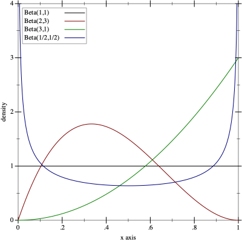

Better A/B testing with Racket
Racket is a scheme (read lisp) that is not at all esoteric. It's well known in the lisp communities and is often used in programming pedagogy. But! It's not often explored in the context of data analytics and data science. Plus, it's my blog, and I wanted to learn Racket.
Lisps broadly, and Racket specifically, are often considered languages for brainiacs. Greybeards in dungeons of programming knowledge casting arcane spells surrounded by endless parentheics ().
I'm not here to refute that claim, but there are some truly amazing things you can do with Racket. I want to explore, broadly, the benefits of language expressiveness when working in data science.
Racket has often been lauded as a phenomenal tool for translating thought into code. Because of the homoiconicity (data and code are both lists), there is a good chance data science exploration will work extremely well in the lisp paradigm.
Why A/B test? What are A and B?
Imagine you are a data scientist for a large e-commerce organization named after a massive rainforest. Congo. Your organization has huge marketshare in the online shopping industry. However, you believe changes to the product page can increase purchases and thereby drive more revenue to the company.
You think the current design B is hurting customer conversion because the call-to-action ($$$) comes before the information. Therefore, your customers are not able to make an informed decision.
It's now time to test this hypothesis.
The simple way
The simple way may be the easiest way initially. You get the go ahead from management to run your test over the next 2 weeks. You work with engineering to build a system that routes people randomly based on a coin flip.

After the 2 weeks are up, you start combing through the data to see what you can find.
(require data-science)- racket data science package
(define A (read-csv "./page_1.csv" #:->number? #t))
> head page_1.csv
"data"
0.0
1.0
1.0
1.0
1.0
1.0
1.0
1.0
1.0
(define B (read-csv "./page_2.csv" #:->number? #t))
> head page_2.csv
"data"
0.0
1.0
1.0
1.0
0.0
1.0
1.0
1.0
1.0
We know that a 1.0 corresponds to a customer buying the product on that page, and a 0.0 means they left without buying. There are some additional complications that we are ignoring for example purposes. For example what if a customer comes back later and buys the item?
If we look at the sorted counts of our method, we see that page A has more 1.0 values and should be deployed to the site instead of page B.
> (sorted-counts ($ A 'data)) '((0.0 1725) (1.0 3275)) > (sorted-counts ($ B 'data)) '((0.0 2198) (1.0 2802))
This works fine, however there are some potential problems.
- It took 2 weeks to figure this out
- What about lost revenue for every customer that went to B?
There's a better way
It turns out that A/B testing can be modeled as a multi-armed bandit problem.

Which can be solved via a number of reinforcement learning techniques. The basic idea is that each arm of the bandit gives a certain reward when pulled. For example, the first arm might give you 10 while the second gives 1 and the third gives 25.
You want to maximize your expected reward over a series of finite pulls (pick number 3 m'lord). So, you want to explore the space of pulls and exploit the knowledge you gain to maximize reward.
There is some really amazing math involved and a lot of work has gone into algorithms to solve these types of problems. $$V(x) = \max_{a \in \Gamma(x)}(F(x,a)) + \beta V(T(x,a))$$ with the Bellman equation and dynamic programming, which we won't explore in this post. But may cover in the future, so sign up for post updates.
Ok, how do we optimally explore and exploit? The first idea might be a greedy approach. Once you try a few pulls, you always pull the lever that gives maximum reward. This is fine in the case of a few options (2 or 3) but when the state space is huge (modern A/B testing) this method quickly falls flat.
It turns out there is a simple solution that is optimal under certain conditions.
Thompson sampling
Thompson sampling is an algorithm for online decision problems where actions are taken sequentially in a manner that must balance between exploiting what is known to maximize immediate performance and investing to accumulate new information that may improve future performance.
The idea is complicated to understand, simple to implement, and powerful. We can treat each page A/B as an arm on the bandit. There is a certain underlying probability that a customer will buy or leave for each page. This can be modeled using a bernoulli distribution (coin flip) with probability $p$.
We then use conjugacy and the Beta distribution to update our belief about the value of $p$ given observations of various customers.
Because Thompson sampling is an online algorithm, we don't have to wait 2 weeks for our method to converge. It is far more sample efficient than the naive method we tried first. Additionally, because we are optimally exploring and exploiting we lose much less revenue.
Ok, that's all well and good, but how does it actually work?
Show me the code
When we start the experiment, each page A/B has two associated values.
- number of wins
- number of losses
If a customer buys the product, we count that as a win.
The Beta distribution has two parameters $(\alpha, \beta)$. $$\frac{x^{\alpha - 1}(1-x)^{\beta - 1}}{B(\alpha, \beta)},$$ $$\text{ with } B(\alpha, \beta) = \frac{\Gamma(\alpha)\Gamma(\beta)}{\Gamma(\alpha \beta)}$$ Powerfully, we can treat $\alpha$ as the number of wins and $\beta$ as the number of losses.
(plot (for/list ([α (in-list '(1 2 3 1/2))]
[β (in-list '(1 3 1 1/2))]
[i (in-naturals)])
(function (distribution-pdf (beta-dist α β))
#:color i #:label (format "Beta(~a,~a)" α β)))
#:x-min 0 #:x-max 1 #:y-max 4 #:y-label "density")
We decide which page to show the customer based on the argmax of the expected value of the distributions. As the wins and losses get updated for each page, we are more and more likely to show the better page to more customers. This means we lose less revenue and converge more quickly to the solution.
(require math/statistics) (require math/distributions)
> (mean (sample (beta-dist 1 2) 100)) 0.3574307559832243 > (mean (sample (beta-dist 8 2) 100)) 0.8070772970353356
Where the parameters to the beta-dist function are ordered $(\alpha, \beta)$ wins vs losses. The argmax gives the higher probability $.8$ in this case and we can choose that page to serve.
Wrapping up
In the end, we have a few lines of decision making code based on sound probabilistic principles (see stanford pdf for convergence guarantees) we can increase the revenue for our rainforest organization and allow customers to make more informed purchasing decisions. Running this decision making code online for the above pages we converged to page A in a few hundred trials instead of the thousands necessary before.